КОНЦЕРТ
YAKTAK
20 вересня · 19:00
Malevich Concert Arena
Великий сольний концерт YAKTAK із живим звуком, улюбленими піснями та яскравою атмосферою.
Детальніше →АФІША МІСЬКИХ ПОДІЙ
Концерти, фестивалі, кіно, театр та події для дітей — обирай, куди піти сьогодні.
Переглянути подіїНАЙБЛИЖЧІ ПОДІЇ
20 вересня · 19:00
Malevich Concert Arena
Великий сольний концерт YAKTAK із живим звуком, улюбленими піснями та яскравою атмосферою.
Детальніше →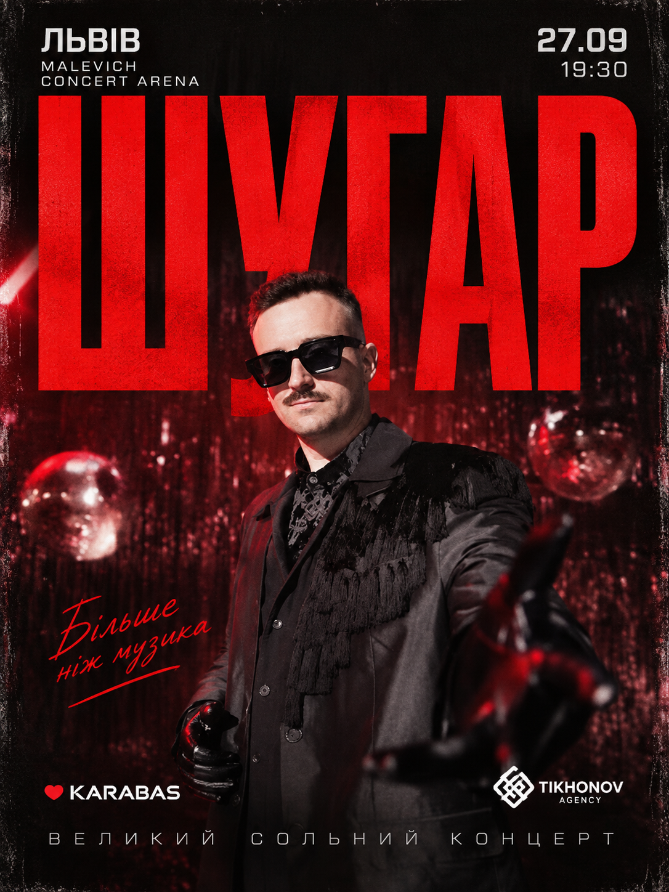
27 вересня · 19:30
Malevich Concert Arena
Вечір сучасної української музики, живого виконання та популярних композицій Шугара.
Детальніше →
12 жовтня · 19:00
Malevich Concert Arena
Атмосферний концерт Омаргалієвої з улюбленими композиціями, живим вокалом і великою сценою.
Детальніше →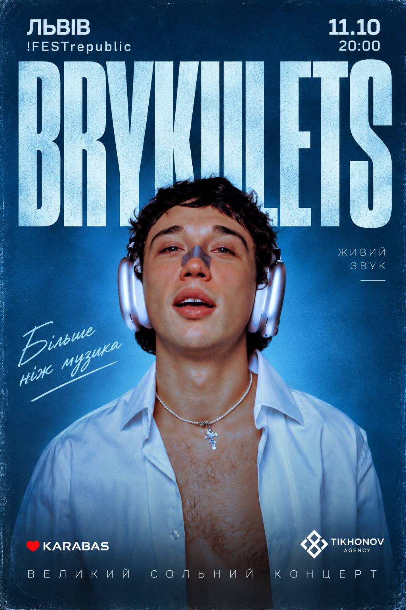
11 жовтня · 20:00
!FESTrepublic
Енергійний живий виступ Brykulets із популярними треками та активною концертною атмосферою.
Детальніше →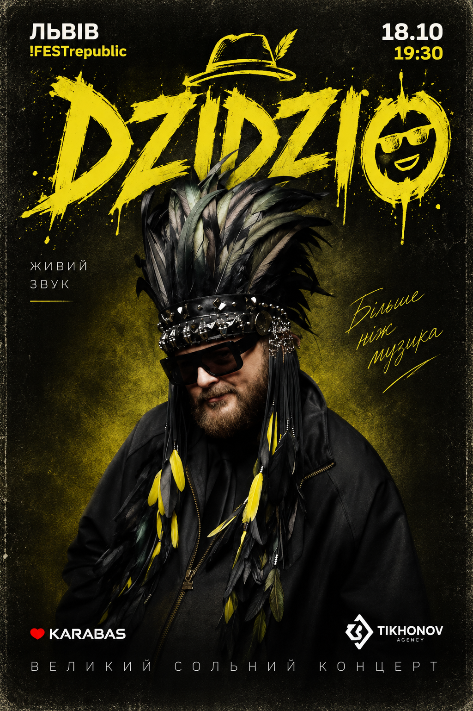
18 жовтня · 19:30
!FESTrepublic
Вечір знайомих хітів, живої музики, гумору та святкової атмосфери разом із Дзідзьо.
Детальніше →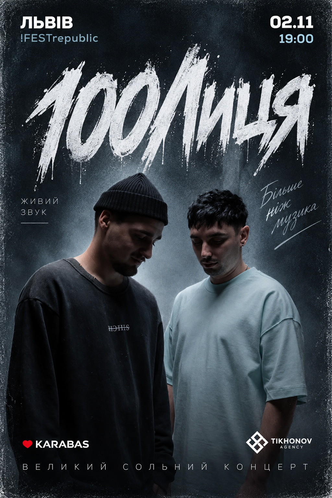
2 листопада · 19:00
!FESTrepublic
Концерт сучасної української музики, популярних композицій і живого звучання 100Лиця.
Детальніше →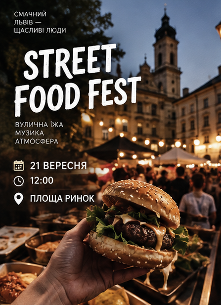
21 вересня · 12:00
площа Ринок
Яскравий гастрономічний фестиваль із вуличною їжею, музикою та приємною атмосферою в центрі Львова.
Детальніше →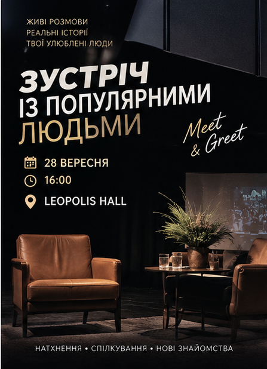
28 вересня · 16:00
Leopolis Hall
Зустріч із цікавими людьми, особистими історіями, живим спілкуванням та можливістю поставити запитання.
Детальніше →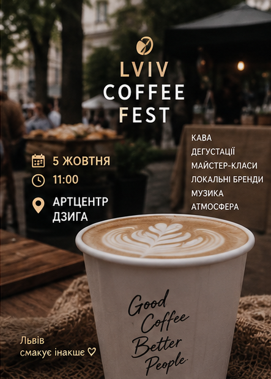
5 жовтня · 11:00
Артцентр ДЗИҐА
Фестиваль для поціновувачів кави з дегустаціями, новими смаками та затишною атмосферою.
Детальніше →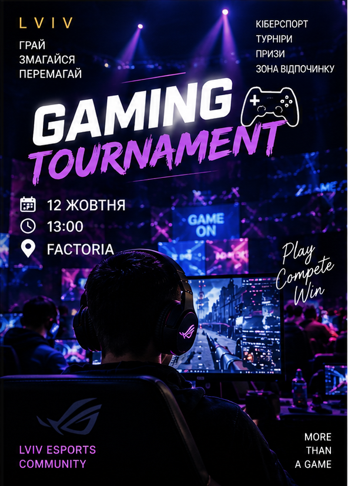
12 жовтня · 13:00
Factoria
Ігрове змагання для любителів відеоігор, активних матчів та спілкування з однодумцями.
Детальніше →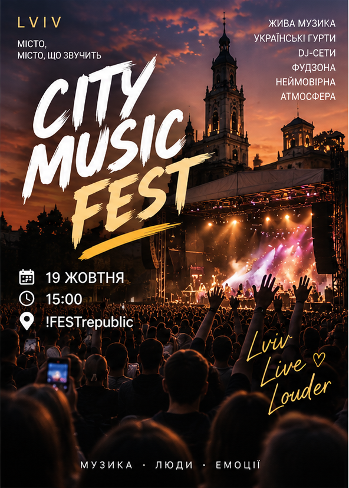
19 жовтня · 15:00
!FESTrepublic
Міський музичний фестиваль із живими виступами, сучасною музикою та великою сценою.
Детальніше →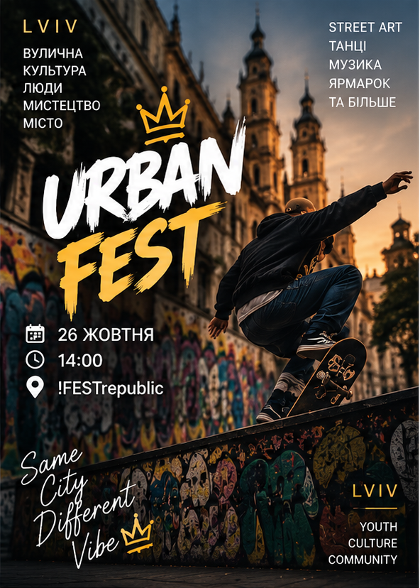
26 жовтня · 14:00
!FESTrepublic
Фестиваль сучасної міської культури, музики, творчості та активного відпочинку.
Детальніше →
10 жовтня · 19:30
Митрополичі сади
Прем’єрний кінопоказ просто неба з великим екраном, затишною атмосферою та особливим вечірнім настроєм.
Детальніше →
17 жовтня · 20:00
Стрийський парк
Нічний показ улюбленого фільму просто неба з великою атмосферою, музикою та затишним вечором у парку.
Детальніше →
25 жовтня · 21:00
Парк «Знесіння»
Нічний показ фільму жахів просто неба для тих, хто любить гострі враження та атмосферні вечори.
Детальніше →
28 жовтня · 19:00
Стрийський парк
Романтичний кіновечір просто неба з улюбленим фільмом, затишною атмосферою та осіннім настроєм.
Детальніше →
31 жовтня · 19:00
Високий замок
Вечір українського кіно просто неба з великим екраном та атмосферою Львова.
Детальніше →
2 листопада · 17:30
Парк культури та відпочинку
Атмосферний кінопоказ просто неба, де можна провести осінній вечір під улюблений фільм.
Детальніше →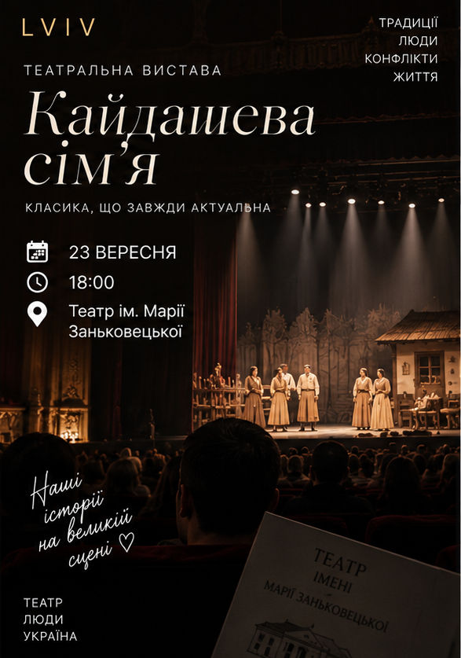
23 вересня · 18:00
Театр ім. Марії Заньковецької
Відома українська історія оживає на сцені у сучасній театральній постановці з гумором та живими емоціями.
Детальніше →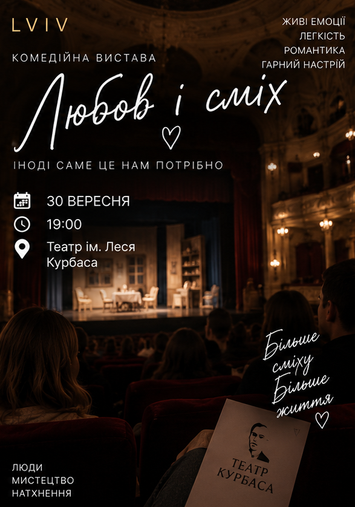
30 вересня · 19:00
Театр ім. Леся Курбаса
Легка театральна історія про стосунки, емоції та ситуації, у яких кожен може впізнати себе.
Детальніше →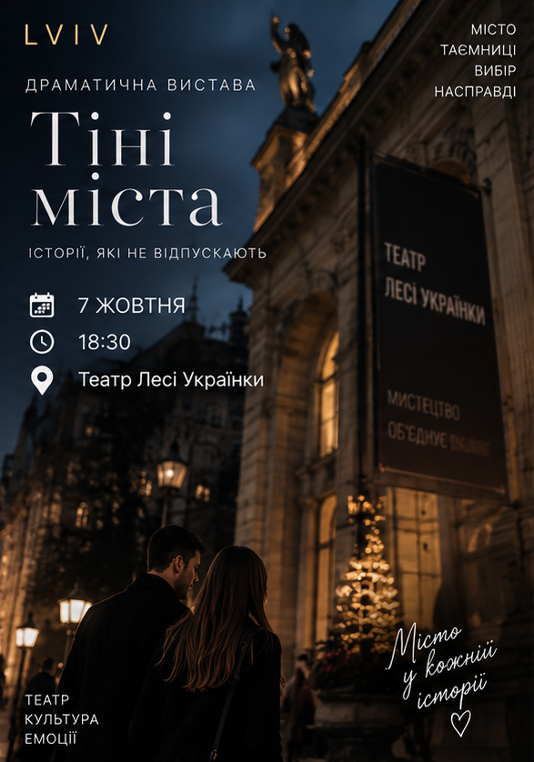
7 жовтня · 18:30
Театр Лесі Українки
Сучасна постановка про людей великого міста, їхні історії, вибір та пошук свого місця.
Детальніше →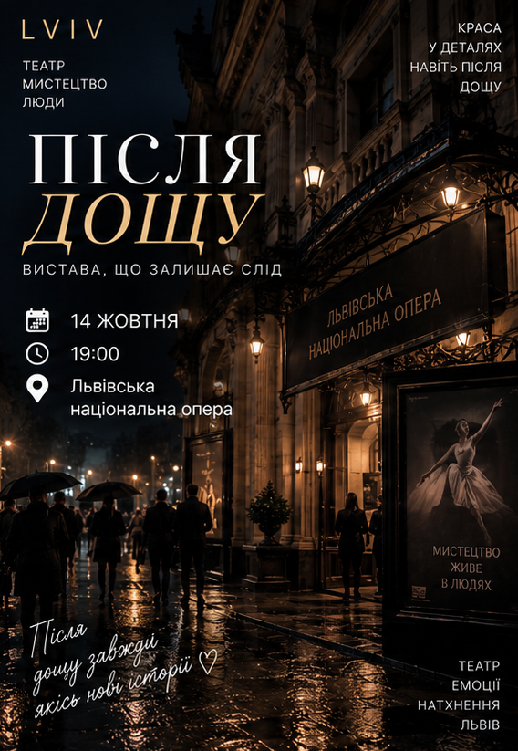
14 жовтня · 19:00
Львівська національна опера
Емоційна театральна історія про зміни, нові початки та важливі зустрічі в житті.
Детальніше →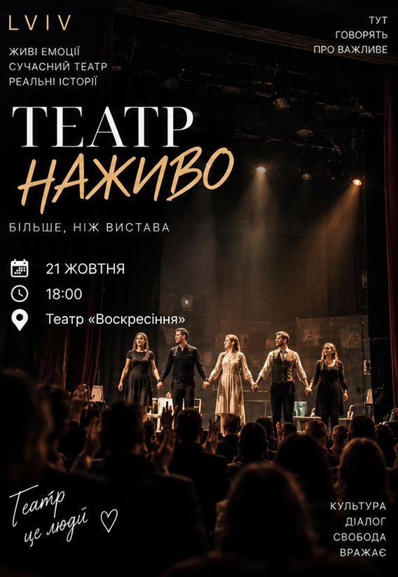
21 жовтня · 18:00
Театр «Воскресіння»
Особливий вечір живого театру з акторською грою, емоціями та безпосередньою атмосферою сцени.
Детальніше →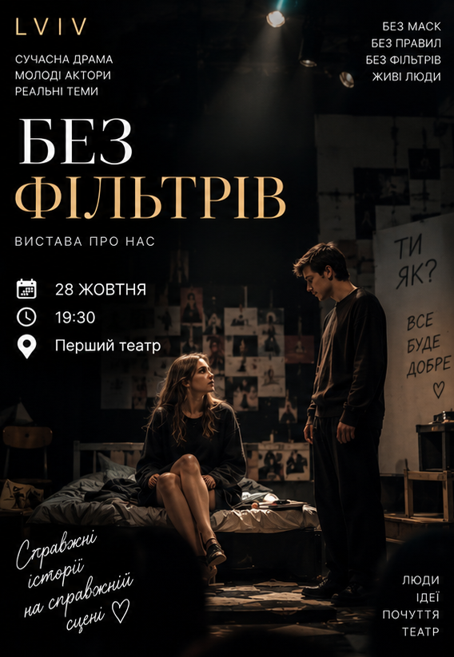
28 жовтня · 19:30
Перший театр
Сучасна вистава про життя, стосунки, вибір та емоції людей без зайвих прикрас.
Детальніше →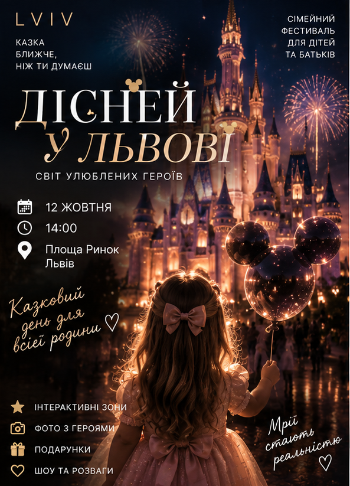
12 жовтня · 14:00
Площа Ринок, Львів
Святкова подія з тематичними активностями, музикою, розвагами та казковою атмосферою для всієї родини.
Детальніше →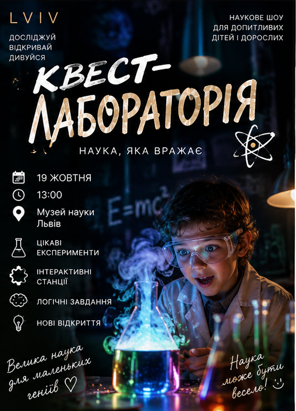
19 жовтня · 13:00
Музей науки Львів
Пізнавальний квест із загадками, науковими експериментами та цікавими завданнями для маленьких дослідників.
Детальніше →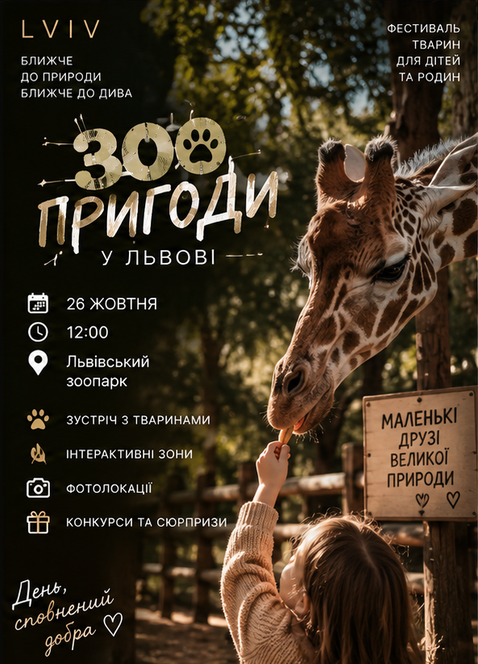
26 жовтня · 12:00
Львівський зоопарк
Весела пізнавальна пригода зі знайомством із тваринами, цікавими активностями та сімейним відпочинком.
Детальніше →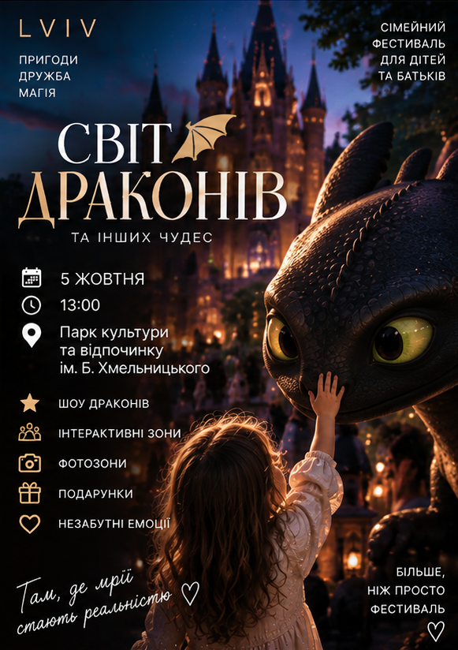
5 жовтня · 13:00
Парк культури та відпочинку ім. Б. Хмельницького
Фантастична пригода з тематичними іграми, творчими завданнями та казковою атмосферою.
Детальніше →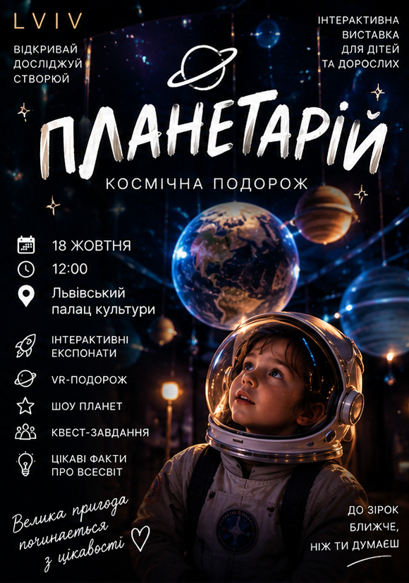
18 жовтня · 12:00
Львівський палац культури
Пізнавальна подія про космос, планети та зоряне небо у цікавому форматі для дітей.
Детальніше →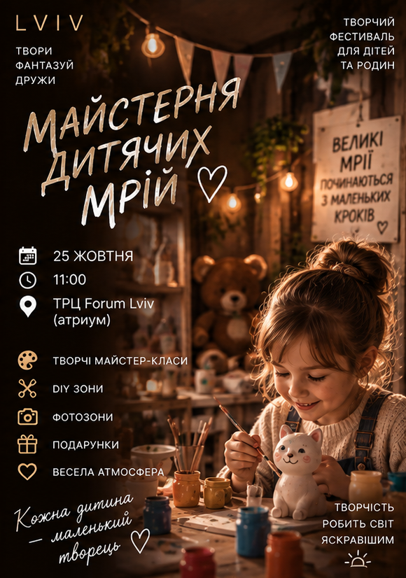
25 жовтня · 11:00
ТРЦ Forum Lviv
Творча майстерня з малюванням, рукоділлям та цікавими завданнями для маленьких творців.
Детальніше →